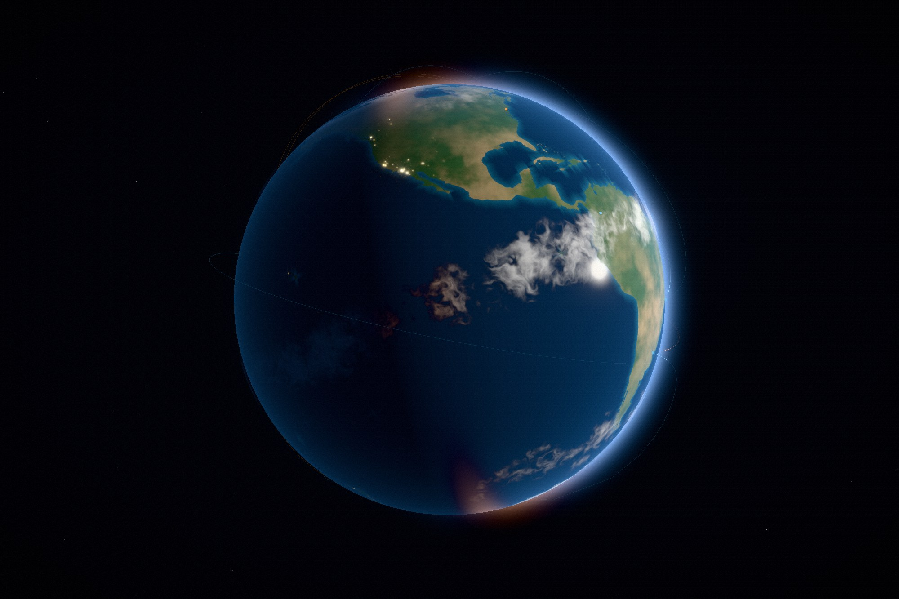

The two studies before this one were generated outright — noise grew the specimen, profiles and ratios
cut the movement. That approach breaks here: no amount of noise will draw you Europe. So this one takes
two small pieces of public data, and makes everything they touch.

Type
Concept · self-directed
Discipline
Real-time 3D · Web
Ships
Two JSON files, 200 kB
Image files
None
The brief
A globe with weather, sunlight, and cities visible on the night side — and it had to carry the
homepage, not just a case page. That second half set the constraints: it has to hold up at a glance,
it has to survive being dragged, and it cannot cost a visitor half a megabyte of imagery before the
first sentence of the page has rendered.
Design decisions
Data for shape, code for everything else
Natural Earth coastlines at 1:50m, simplified to a tenth of a degree, and every settlement
over 200,000 people: 200 kB of vectors. Ocean depth, biome colour, cloud deck, city glow and
the terminator are all computed from them at load.
The sun stays put; the planet turns
Lighting is one direction in world space, so the terminator sweeps across the surface as the
globe rotates. Day breaks over a coastline instead of sitting still — the thing that makes a
globe feel like a planet rather than a textured ball.
Air, not a shell
The halo fades on how close each line of sight passes to the planet, not on the silhouette
of the sphere drawing it. That one change is the difference between an atmosphere and a
visible bubble around the globe.
How it is built
Coastlines are filled to a canvas as a land mask — rings that straddle the antimeridian are cut
there, or a continent smears across the map. A second pass measures distance from land out to sea
and stores it as a shelf channel, which is what turns coasts turquoise and leaves the abyssal
plains almost black.
The cloud deck is baked on the GPU in a single pass: fractal noise sampled on the sphere each pixel
maps to, so it wraps at the antimeridian and does not pinch at the poles, then banded by latitude —
wet at the equator, dry at the horse latitudes, stormy in the mid-latitudes. The same field is read
twice by the surface shader, once where you are standing and once offset along the sun, so the deck
throws a shadow on the ground beneath it.
City lights are drawn as splats scaled by the log of population, with satellite towns scattered
around each one. Scale mattered more than brightness: at a first attempt each metro was a thousand
kilometres wide and North America fused into a single white mass.
Craft notes
Great-circle routes run between the largest cities with a pulse travelling each line; the rest
of the arc stays a faint filament so the route is still readable between pulses.
The homepage imports the module only once the hero is on screen, and disposes it on
pagehide — a visitor who lands and scrolls straight past never pays for the
renderer.
Small screens take half-size maps and fewer segments; prefers-reduced-motion
stops the rotation, the pulses and the grain.
Coastlines get a 4096-wide mask while everything else stays at 2048 — recognition lives in the
outlines, and nowhere else.
Outcome
A globe that reads as Earth from across a room and holds up when you drag it: weather that moves at
its own rate, cities that come on as the terminator passes, a limb that glows because of how air
thins rather than because a sphere was drawn slightly larger. It runs the same code on the case page
and on the homepage, with different framing and one less layer of post.